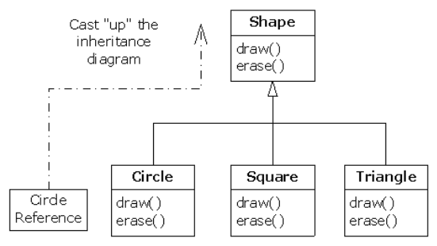
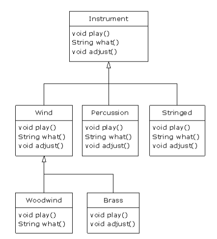

Thinking in Java chapter 9 多态
目录
1 简介
继数据抽象（data abstraction）和继承( Inheritance )之后，多态(polymorphism)是 Java 语言支持的又一重要特性。
使用多态，可以针对同一个操作输入多种类型的数据。多态指的是同一操作支持多中数据类型。这在动态语言中显得尤为明显，比如 Python 。在 Java 中，我们也碰到过多态的例子，比如对于 + 如果我们 1+2 我们期待输出的结果是 3 ，此时， + 的功能是数学里的加法运算，但是对于 'a' + 'bc' 这样的运算，我们希望输出的是 'abc' 也就是字符串的级联。这个小例子体现了 + 的多种形态。
多态往往和动态绑定等价。在很多地方 polymorphism 和 dynamic binding , late binding, runtime binding 相提并论。
2 重访 upcasting
我们知道通过继承，一个对象的类型可以是当前类（class），也可以是其父类。把一个对象的类型当作其父类来处理就叫做 upcasting. 但是通过下面的这个例子，我们就会看到 upcasting 会导致一个问题。
这是一个关于音乐的例子，由于多个类都要用到 Notes，比如 C 小调之类的专有名词，我们首先建立一个 enum
1: //: polymorphism/music/Note.java 2: // Notes to play on musical instruments. 3: package polymorphism.music; 4: 5: public enum Note { 6: MIDDLE_C, C_SHARP, B_FLAT; // Etc. 7: } ///:~
然后， Wind 是一个乐器 Instrument 。 Wind 类就继承自 Instrument 类。
Instrument 类：
1: //: polymorphism/music/Instrument.java 2: package polymorphism.music; 3: import static net.mindview.util.Print.*; 4: 5: class Instrument { 6: public void play(Note n) { 7: print("Instrument.play()"); 8: } 9: } 10: ///:~
Wind 类：
1: //: reusing/Wind.java 2: // Inheritance & upcasting. 3: package polymorphism.music; 4: 5: 6: // Wind objects are instruments 7: // because they have the same interface: 8: public class Wind extends Instrument { 9: public void play(Note n){ 10: System.out.println("Wind.play" + n); 11: } 12: } ///:~
最后是 Music 类：
1: //: polymorphism/music/Music.java 2: // Inheritance & upcasting. 3: package polymorphism.music; 4: 5: public class Music { 6: public static void tune(Instrument i) { 7: // ... 8: i.play(Note.MIDDLE_C); 9: } 10: public static void main(String[] args) { 11: Wind flute = new Wind(); 12: tune(flute); // Upcasting 13: } 14: } /* Output: 15: Wind.play() MIDDLE_C 16: *///:~
注意， Music 类的 Music.tune 方法接受了一个 Instrument 类型的对象。这说明任何从 Instrument 类继承下来的类的对象都可以送给 Music.tune. 在 Music 的 main 函数中，我们送给 tune 的就是 Wind 类型的对象。这是没有问题的，因为 Wind 类继承自 Instrument 类。在这里，通过给 tune 函数送入 Instrument 类型的对象，而不是 Wind 类型的对象，我们节约了大量的代码量。想象一下，乐器有好多种，也就是从 Instrument 类可以继承下来很多对象。如果我们为每一个乐器都写一个 tune 函数，这将是多么无聊的事情。
看如下无聊的代码：
1: //: polymorphism/music/Music2.java 2: // Overloading instead of upcasting. 3: package polymorphism.music; 4: import static net.mindview.util.Print.*; 5: 6: class Stringed extends Instrument { 7: public void play(Note n) { 8: print("Stringed.play() " + n); 9: } 10: } 11: 12: class Brass extends Instrument { 13: public void play(Note n) { 14: print("Brass.play() " + n); 15: } 16: } 17: 18: public class Music2 { 19: public static void tune(Wind i) { 20: i.play(Note.MIDDLE_C); 21: } 22: public static void tune(Stringed i) { 23: i.play(Note.MIDDLE_C); 24: } 25: public static void tune(Brass i) { 26: i.play(Note.MIDDLE_C); 27: } 28: public static void main(String[] args) { 29: Wind flute = new Wind(); 30: Stringed violin = new Stringed(); 31: Brass frenchHorn = new Brass(); 32: tune(flute); // No upcasting 33: tune(violin); 34: tune(frenchHorn); 35: } 36: } /* Output: 37: Wind.play() MIDDLE_C 38: Stringed.play() MIDDLE_C 39: Brass.play() MIDDLE_C 40: *///:~
上面的代码可以工作，但是这个代码结构有一个致命的问题：你必须为每一个乐器编写 tune 函数。 那么，如果能够只写一次 tune 方法，且送入的对象是 Instrument 类型，而不是 Instrument 的任一子类，岂不是更好？也就是说，在使用 tune 方法的时候，我们如果忘记 tune 的参数类型岂不是更好？这就是多态带来的福利。
3 纠结
现在，我们有一个问题， Java 在编译的过程中怎么知道 Instrument 类指向的是 Wind 而不是 Brass 或者 Stringed 类？答案是：编译器不知道。为理解这个问题，我们探讨 binding 的原理。
3.1 方法调用 binding
把方法调用和方法本身连接起来的过程叫做 binding 。程序执行之前的 binding 叫做 early binding (可能由编译器和链接器来完成)。 C 语言种的 binding 都是 early binding。但是，我们前面的例子告诉我们 Java 中， binding 的方式有些不一样。因为编译器不知道到底该调用哪个方法。所以 Java 中的 binding 方法是所谓的 late binding .意味着 binding 发生在程序运行时。late binding 也叫做 dynamic binding 或者 runtime binding。
Java 中除了 static 和 final 方法外，所有的方法都是 late binding .这意味着，你不需要显示的为某个方法指示用什么 binding 方式。Java 已经帮你安排好了。所有的 private 方法都是 final 类型的。指定一个方法为 final 意味着，你不想这个方法动态绑定。这样做的一个好处是编译器会编译出更高效的代码。但是，你不能因为性能的借口，到处使用 final ,你应该处于设计的原因使用 final ，毕竟使用 final 带来的性能提升没有那么多。
3.2 正确的行为
一旦知晓 Java 的动态绑定，我们就可以写出支持多态的漂亮代码。你的代码针对的类型不只是当前类，当前类的父类，父类的父类的对象都可以作为参数。这在 Python 中也有明显的体现（Python 是完全动态的语言）。 我们使用一个经常用到的例子来阐述与 动态绑定相关的概念。

图 1: 动态绑定
根据上图：
Shape s = new Circle();
这个语句生成了 Circle 对象，生成的结果转换成了 Shape 类型。貌似，这是一个错误，毕竟我们把一种类型的对象转换成了另一种类型。但是，这是可以的，因为 Circle 类继承自 Shape . 问题来了，
s.draw();
调用的是哪个函数？你可能会认为调用的是 Shape 的 draw() 函数，因为 s 被转换成了 Shape 类型。但是，这里调用的是 Circle.draw() . 为甚么？因为多态。
接下来，看代码，首先是 Shape 类：
1: //: polymorphism/shape/Shape.java 2: package polymorphism.shape; 3: 4: public class Shape { 5: public void draw() {} 6: public void erase() {} 7: } ///:~
Circle 类：
1: //: polymorphism/shape/Circle.java 2: package polymorphism.shape; 3: import static net.mindview.util.Print.*; 4: 5: public class Circle extends Shape { 6: public void draw() { print("Circle.draw()"); } 7: public void erase() { print("Circle.erase()"); } 8: } ///:~
Square 类：
1: //: polymorphism/shape/Square.java 2: package polymorphism.shape; 3: import static net.mindview.util.Print.*; 4: 5: public class Square extends Shape { 6: public void draw() { print("Square.draw()"); } 7: public void erase() { print("Square.erase()"); } 8: } ///:~
Triangle 类：
1: //: polymorphism/shape/Triangle.java 2: package polymorphism.shape; 3: import static net.mindview.util.Print.*; 4: 5: public class Triangle extends Shape { 6: public void draw() { print("Triangle.draw()"); } 7: public void erase() { print("Triangle.erase()"); } 8: } ///:~
随机生成形状类：
1: //: polymorphism/shape/RandomShapeGenerator.java 2: // A "factory" that randomly creates shapes. 3: package polymorphism.shape; 4: import java.util.*; 5: 6: public class RandomShapeGenerator { 7: private Random rand = new Random(47); 8: public Shape next() { 9: switch(rand.nextInt(3)) { 10: default: 11: case 0: return new Circle(); 12: case 1: return new Square(); 13: case 2: return new Triangle(); 14: } 15: } 16: } ///:~
调用以上代码：
1: //: polymorphism/Shapes.java 2: // Polymorphism in Java. 3: import polymorphism.shape.*; 4: 5: public class Shapes { 6: private static RandomShapeGenerator gen = 7: new RandomShapeGenerator(); 8: public static void main(String[] args) { 9: Shape[] s = new Shape[9]; 10: // Fill up the array with shapes: 11: for(int i = 0; i < s.length; i++) 12: s[i] = gen.next(); 13: // Make polymorphic method calls: 14: for(Shape shp : s) 15: shp.draw(); 16: } 17: } /* Output: 18: Triangle.draw() 19: Triangle.draw() 20: Square.draw() 21: Triangle.draw() 22: Square.draw() 23: Triangle.draw() 24: Square.draw() 25: Triangle.draw() 26: Circle.draw() 27: *///:~
基类 Shape 构建了所有子类的函数接口：所有的子类都可以被 draw 和 erase 。 RandomShapeGenerator 是一个形状工厂，随机生成形状对象，并保存在 s 中。每一个类对象是 Circle Square 或者 Triangle 中的一个，但是在 return 的时候， upcast 成为 Shape 类对象。因此当调用 next() 时，返回的永远是 Shape 类对象。
main() 函数通过调用 RandomShapeGenerator.next() 生成了 9 个 Shape 类对象，保存在 s 中。在这个时候，你知道你有一个 Shape 的数组，但是你不知道，生成的到底时 Circle Square 还是 Triangle 。但是，当你逐个调用 draw() 函数的时候，奇妙的事情发生了， Java 居然可以知道每一个 Shape 该执行哪一个 draw() 这个就是多态。
3.3 可扩展性
现在我们重新考虑上面乐器的例子。如上所述，使用多态技术，我们可以在不改变 tune() 方法的前提下，添加任意多种乐器类型。在一个设计考究的面向对象系统中，许多方法都具有类似 tune() 的模式，这些子类只与基类通信，但是使用的却是各自的 tune() 实现。这种代码就由很强的可扩展性。因为通过继承基类的数据类型，我们可以添加新的功能。最重要的，我们不需要改变基类的实现，我们使用的仅仅是基类的接口，真正的实现在各个子类的方法中。
图 2是一个扩展的例子。

图 2: extensibility
所有这些新类都和原来的 tune() 相安无事。即便我们把 tune() 放到一个分离的文件中，并为 Instrument 类上添加新的方法， tune() 依然会工作的很好（我们甚至不用重新编译这个文件）。
图 2 所示的代码如下：
1: //: polymorphism/music3/Music3.java 2: // An extensible program. 3: package polymorphism.music3; 4: import polymorphism.music.Note; 5: import static net.mindview.util.Print.*; 6: 7: class Instrument { 8: void play(Note n) { print("Instrument.play() " + n); } 9: String what() { return "Instrument"; } 10: void adjust() { print("Adjusting Instrument"); } 11: } 12: 13: class Wind extends Instrument { 14: void play(Note n) { print("Wind.play() " + n); } 15: String what() { return "Wind"; } 16: void adjust() { print("Adjusting Wind"); } 17: } 18: 19: class Percussion extends Instrument { 20: void play(Note n) { print("Percussion.play() " + n); } 21: String what() { return "Percussion"; } 22: void adjust() { print("Adjusting Percussion"); } 23: } 24: 25: class Stringed extends Instrument { 26: void play(Note n) { print("Stringed.play() " + n); } 27: String what() { return "Stringed"; } 28: void adjust() { print("Adjusting Stringed"); } 29: } 30: 31: class Brass extends Wind { 32: void play(Note n) { print("Brass.play() " + n); } 33: void adjust() { print("Adjusting Brass"); } 34: } 35: 36: class Woodwind extends Wind { 37: void play(Note n) { print("Woodwind.play() " + n); } 38: String what() { return "Woodwind"; } 39: } 40: 41: public class Music3 { 42: // Doesn't care about type, so new types 43: // added to the system still work right: 44: public static void tune(Instrument i) { 45: // ... 46: i.play(Note.MIDDLE_C); 47: } 48: public static void tuneAll(Instrument[] e) { 49: for(Instrument i : e) 50: tune(i); 51: } 52: public static void main(String[] args) { 53: // Upcasting during addition to the array: 54: Instrument[] orchestra = { 55: new Wind(), 56: new Percussion(), 57: new Stringed(), 58: new Brass(), 59: new Woodwind() 60: }; 61: tuneAll(orchestra); 62: } 63: } /* Output: 64: Wind.play() MIDDLE_C 65: Percussion.play() MIDDLE_C 66: Stringed.play() MIDDLE_C 67: Brass.play() MIDDLE_C 68: Woodwind.play() MIDDLE_C 69: *///:~
在上面的代码中，新添加了 what() ，该函数返回一个描述当前类的字符对象。另一个新添加的方法是 adjust() ，该方法提供了调节每一个乐器的方法。
在 main() 函数中，当在 orchestra 数组中放置一组乐器时，这些乐器自动升级为 Instrument 。
可以看到 tune() 函数完全忽略了其他代码的变化，依然和整个程序配合的很好。这就是多态带来的福利：只改变那些应该被改变的。
3.4 private 无法被覆盖
看下面代码：
1: //: polymorphism/PrivateOverride.java 2: // Trying to override a private method. 3: package polymorphism; 4: import static net.mindview.util.Print.*; 5: 6: public class PrivateOverride { 7: private void f() { print("private f()"); } 8: public static void main(String[] args) { 9: PrivateOverride po = new Derived(); 10: po.f(); 11: } 12: } 13: 14: class Derived extends PrivateOverride { 15: public void f() { print("public f()"); } 16: } /* Output: 17: private f() 18: *///:~
有可能，你会问：问什么输出不是 public f() ？这是 private 类型函数自带 final 标签，无法被覆盖。所以在 Derived 类中的函数是一个新函数。
3.5 对域的处理
一旦你学了多态，就想处处使用多态。但是，只有普通函数支持多态。比如，如果你读取一个子域，这个过程是在编译阶段完成的。看代码：
1: //: polymorphism/FieldAccess.java 2: // Direct field access is determined at compile time. 3: 4: class Super { 5: public int field = 0; 6: public int getField() { return field; } 7: } 8: 9: class Sub extends Super { 10: public int field = 1; 11: public int getField() { return field; } 12: public int getSuperField() { return super.field; } 13: } 14: 15: public class FieldAccess { 16: public static void main(String[] args) { 17: Super sup = new Sub(); // Upcast 18: System.out.println("sup.field = " + sup.field + 19: ", sup.getField() = " + sup.getField()); 20: Sub sub = new Sub(); 21: System.out.println("sub.field = " + 22: sub.field + ", sub.getField() = " + 23: sub.getField() + 24: ", sub.getSuperField() = " + 25: sub.getSuperField()); 26: } 27: } /* Output: 28: sup.field = 0, sup.getField() = 1 29: sub.field = 1, sub.getField() = 1, sub.getSuperField() = 0 30: *///:~
在上面的例子中，我们发现对于 field 的读取是在编译阶段完成的。但是对于函数 getField 的调用却是多态的。
3.6 对 static 方法的处理
如果一个方法是 static 的，那么这个方法不具有多态属性。
看代码：
1: //: polymorphism/StaticPolymorphism.java 2: // Static methods are not polymorphic. 3: 4: class StaticSuper { 5: public static String staticGet() { 6: return "Base staticGet()"; 7: } 8: public String dynamicGet() { 9: return "Base dynamicGet()"; 10: } 11: } 12: 13: class StaticSub extends StaticSuper { 14: public static String staticGet() { 15: return "Derived staticGet()"; 16: } 17: public String dynamicGet() { 18: return "Derived dynamicGet()"; 19: } 20: } 21: 22: public class StaticPolymorphism { 23: public static void main(String[] args) { 24: StaticSuper sup = new StaticSub(); // Upcast 25: System.out.println(sup.staticGet()); 26: System.out.println(sup.dynamicGet()); 27: } 28: } /* Output: 29: Base staticGet() 30: Derived dynamicGet() 31: *///:~
我们可以看到， static 方法不具有多态属性，具有多态属性的是普通函数。
4 构造函数和多态
构造函数和其他函数不一样，当构造函数和多态碰撞，其发生的化学反应更是不同。首先，构造函数不具有多态属性，因为构造函数是不带 static 的 static 函数。理解构造函数和多态的结合至关重要，可以帮助我们减少很多不必要的麻烦。